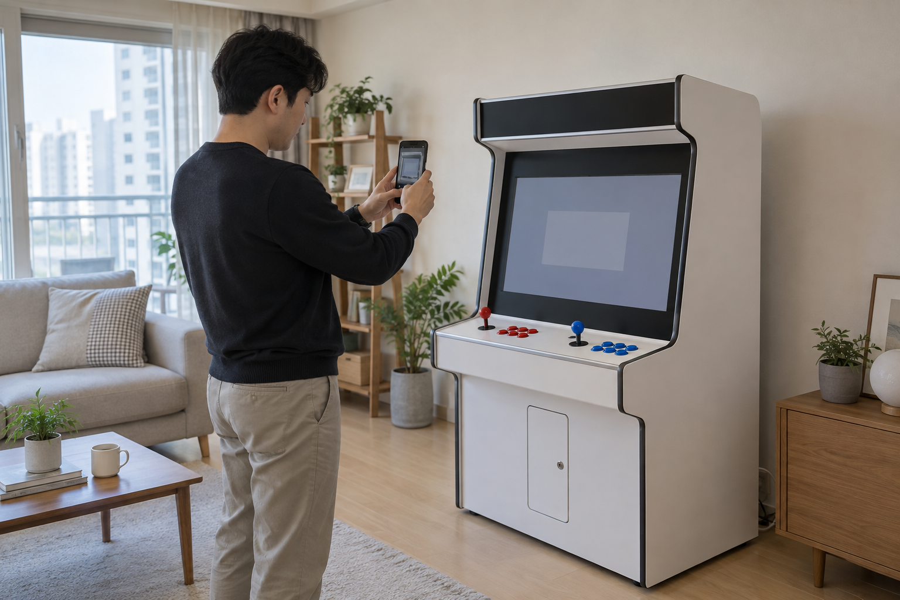
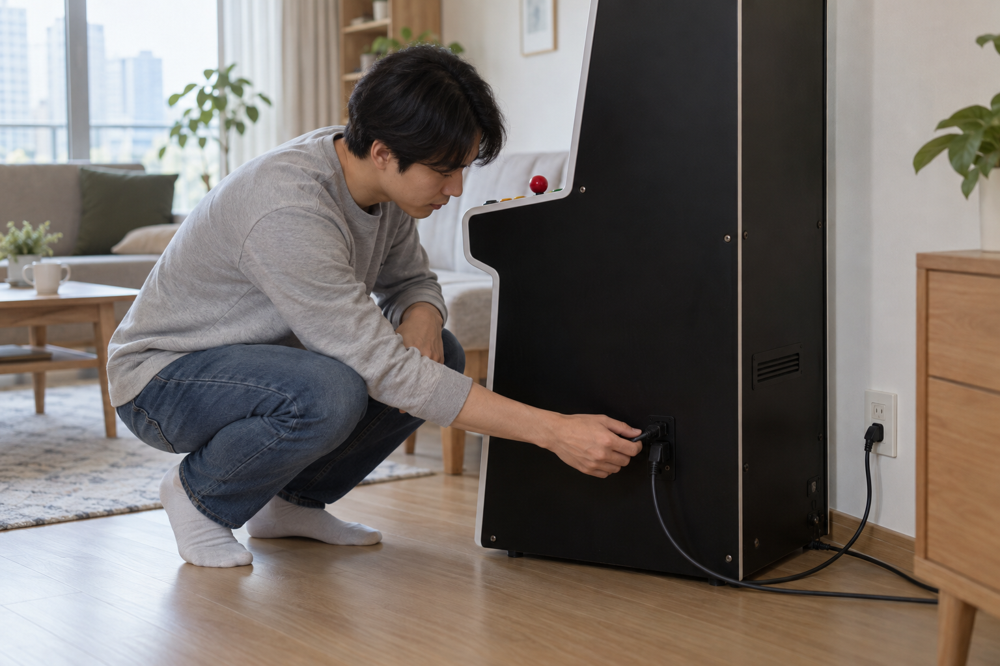

오락기 게임이 실행되지 않으면 전원을 계속 껐다 켜기보다 전원·화면·게임 선택·조작 반응 중 어디에서 멈췄는지 먼저 나눠 확인하세요. 현재 화면과 선택한 게임을 기록한 뒤 제품 안내에 적힌 기본 연결만 점검하고, 임의 분해나 파일 변경은 하지 마세요.

현재 화면과 조작 반응을 먼저 기록하세요
전원 표시가 있는지, 화면에 메뉴가 보이는지, 특정 게임을 선택한 뒤에만 멈추는지 차례로 살펴보세요. 조이스틱으로 메뉴가 움직이는지와 시작 버튼이 반응하는지도 별도로 확인하고, 화면의 문구나 표시가 있다면 그대로 사진에 남기세요. 한꺼번에 여러 설정을 바꾸면 어느 단계가 달라졌는지 확인하기 어려워집니다.
전원·화면·게임 선택·조작 반응을 구분해 기록하면 문제 지점을 설명하기 쉬워집니다.
- 전원 표시와 화면 켜짐 여부
- 게임 목록 또는 선택 화면 표시 여부
- 한 게임만 안 되는지 여러 게임이 같은지
- 조이스틱 이동과 시작 버튼 반응 여부

전원과 외부 케이블을 확인하세요
게임을 종료할 수 있다면 제품 안내에 따라 종료하고 전원을 끈 뒤, 외부에서 보이는 전원선과 화면 연결선이 눌리거나 빠져 있지 않은지 확인하세요. 케이블을 억지로 돌리거나 본체를 열지 말고, 포트 위치와 연결 순서는 구매한 모델의 안내를 따르세요. 안전한 전원 순서는 오락기를 안전하게 켜고 끄는 방법에서 이어서 확인할 수 있습니다.
전원을 끈 뒤 제품 안내에 표시된 외부 케이블만 눈으로 차례로 확인하세요.
제품명과 게임 구성을 맞춰보세요
노리박스 제품 목록에는 신형HX 한글게임팩, 잠마28핀 한글게임팩, 하이퍼PC 소프트웨어 업데이트 요청이 서로 다른 상품으로 안내됩니다. 따라서 다른 제품의 실행 방법이나 업데이트 파일을 그대로 적용하지 말고, 오락기 모델과 게임팩 이름을 주문 내역에서 정확히 확인하세요. 원하는 게임이 실제 구성에 포함됐는지는 구매 전 게임 포함 여부 확인 방법에서도 확인할 수 있습니다.
같아 보이는 게임 목록이라도 오락기 모델과 게임팩 구성이 다르면 확인 순서가 달라집니다.
확인한 내용을 정리해 문의하세요
기본 확인 뒤에도 실행되지 않으면 제품명, 게임팩 이름, 실행하려던 게임, 멈춘 화면, 조작 반응과 이미 해본 순서를 적으세요. 인터넷에서 찾은 파일을 임의로 설치하거나 게임팩을 분리하기 전에 판매자에게 현재 상태를 전달하세요. 노리박스는 판매 뒤 생기는 사용 문의와 A/S, 부품 문제를 직접 다뤄온 경험을 제품 점검에 반영한다고 브랜드 소개에서 밝히고 있습니다.
제품명과 멈춘 단계, 화면 사진을 함께 전달해야 같은 증상을 다시 확인하기 쉽습니다.
현재 노리박스 오락실게임기와 게임 관련 제품은 제품자세히보기에서 확인하세요.